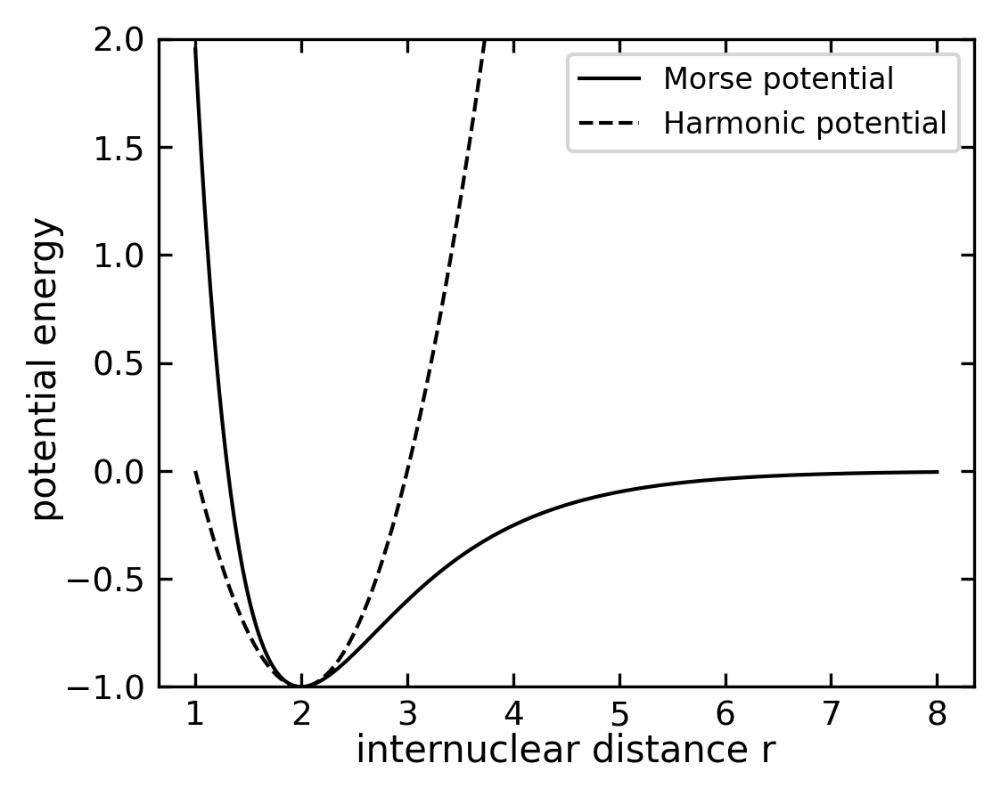
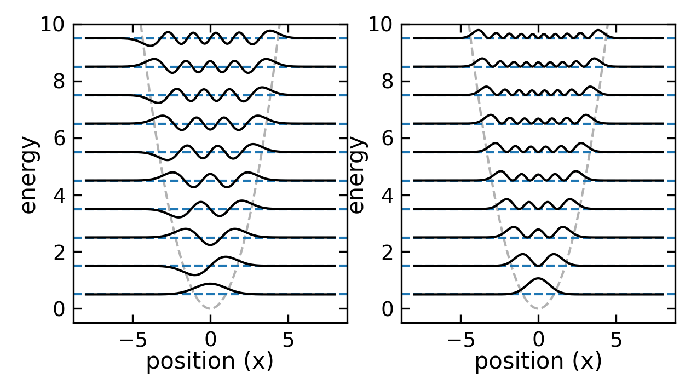
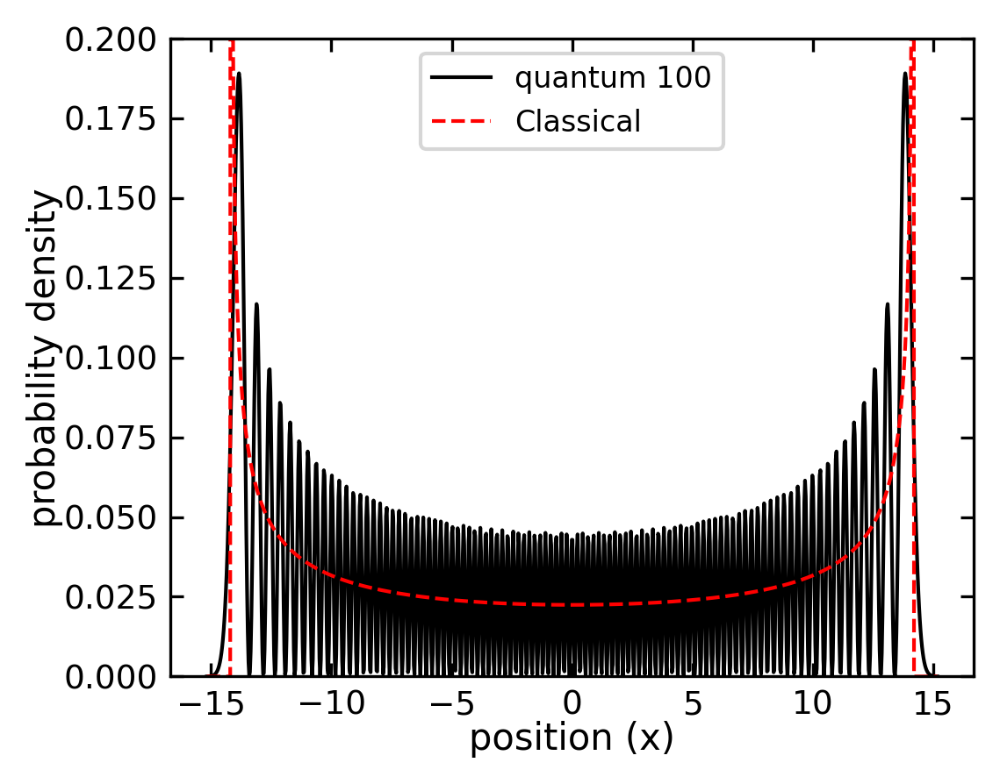
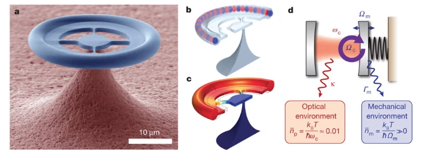
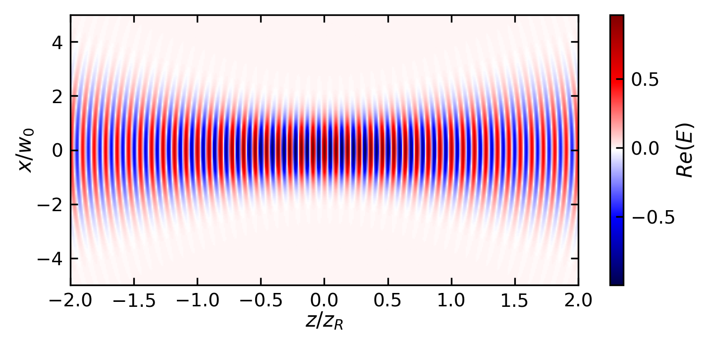
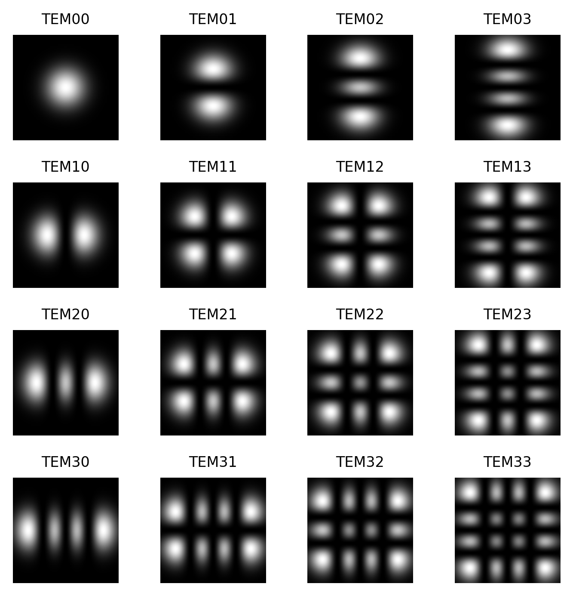

44 The harmonic oscillator
One of the most important examples in all branches of physics is the harmonic oscillator. The potential has the shape of a parabola with the potential energy of
\[ E_{\mathrm{pot}} = \frac{1}{2} D x^2 \]
and the repelling force depends linearly on the deviation from the equilibrium position
\[ F = - \mathrm{grad} \left( E_{\mathrm{pot}} \right) = - D x \mathrm{.} \]
This harmonic potential is a first approximation for a bonding and non-bonding interaction of two atoms. The potential energy of a diatomic molecule can be described, for example, by the Morse potential
\[ E_{\mathrm{pot}} = D \left( 1 - \mathrm{e}^{-a \left( r - r_e \right)} \right)^2 - D \]
with the parameters \(D\), \(a\), and \(r_e\).
For small oscillations around the equilibrium position \(r_e\), the Morse potential can be approximated by a harmonic potential, as shown in the figure above. In classical mechanics, this corresponds to a two-body system where we use the reduced mass \(m = \frac{m_1m_2}{m_1+m_2}\) of the two atoms oscillating around the equilibrium position (\(x = 0\)) under the influence of a restoring force \(F = - D x\). The system will perform a harmonic oscillation with the frequency
\[ \omega = \sqrt{\frac{D}{m}} \mathrm{.} \]
In order to discuss a quantum mechanical harmonic oscillator we start with the Schrödinger equation and the harmonic potential \(E_{\mathrm{pot}} = D x^2/2\),
\[ -\frac{\hbar^2}{2m} \frac{\partial^2}{\partial x^2} \psi \left( x \right) + \frac{1}{2} D x^2 \psi \left( x \right) = E \psi \left( x \right) \mathrm{,} \]
which becomes
\[ -\frac{\hbar^2}{2m} \frac{\partial^2}{\partial x^2} \psi \left( x \right) + \frac{1}{2} \omega^2 m x^2 \psi \left( x \right) = E \psi \left( x \right) \]
with the aid of the relation between the frequency \(\omega\) and the curvature of the potential \(D\) and finally
\[ \frac{\partial^2}{\partial x^2} \psi \left( x \right) + \left( \frac{2 m}{\hbar^2} E - \frac{m^2 \omega^2}{\hbar^2} x^2 \right) \psi \left( x \right) = 0 \mathrm{.} \]
44.1 Harmonic oscillator
While the classical harmonic oscillator discusses the dynamics of a particle in a harmonic potential, the quantum mechanical harmonic oscillator is discussing the stationary states of the particle in the same potential.
To solve the Schrödinger equation, we introduce the dimensionless variable \(\xi\) and the dimensionless energy \(C\), which are defined as
\[ \begin{aligned} x & = \sqrt{\frac{\hbar}{m \omega}} \cdot \xi\\ E & = \frac{\hbar \omega}{2} C \end{aligned} \]
and reformulate the Schrödinger equation like
\[ \frac{\partial^2}{\partial \xi^2} \psi \left( \xi \right) + \left( C - \xi^2 \right) \psi \left( \xi \right) = 0 \mathrm{.} \]
To understand the asymptotic behavior of the wave function, let’s consider what happens for very large values of \(\xi\). In this regime, the term \(\xi^2\) in the Schrödinger equation will dominate over the energy term \(C\), giving us the simplified equation:
\[\frac{\partial^2}{\partial \xi^2} \psi(\xi) - \xi^2 \psi(\xi) \approx 0\]
We can try a solution of the form \(\psi(\xi) \propto e^{f(\xi)}\). Inserting this into our simplified equation yields:
\[f''(\xi) + [f'(\xi)]^2 = \xi^2\]
For large \(\xi\), we expect the dominant term to be \([f'(\xi)]^2 = \xi^2\), giving \(f'(\xi) = \pm \xi\) and thus \(f(\xi) = \pm \frac{\xi^2}{2}\). The negative solution ensures the wave function remains bounded as \(\xi \to \infty\). Therefore, we can deduce that \(\psi(\xi)\) must behave like \(\propto e^{-\frac{\xi^2}{2}}\) in its asymptotic limit. Based on this asymptotic behavior, we can write the general solution as
\[ \psi \left( \xi \right) = H \left( \xi \right) \mathrm{e}^{- \frac{\xi^2}{2}} \mathrm{.} \]
If we substitute our general solution back into the Schrödinger equation, we find:
\[ \frac{\partial^2}{\partial \xi^2} H \left( \xi \right) - 2 \xi \frac{\partial}{\partial \xi} H \left( \xi \right) + \left( C - 1 \right) H \left( \xi \right) = 0 \mathrm{.} \]
This differential equation is known as the Hermite differential equation - you may have encountered similar equations in your math courses. The solutions to this equation are special polynomials called Hermite polynomials, which are indexed by integer values n = 0, 1, 2, 3, etc. These polynomials can be written as:
\[ H_n \left( \xi \right) = \left( -1 \right)^{n} \cdot \mathrm{e}^{\xi^2} \cdot \frac{\partial^{n}}{\partial \xi^{n}} \left( \mathrm{e}^{- \xi^2} \right) \]
When we plug these Hermite polynomials back into our equation as \(H_{n} \left( \xi \right)\), we find a simple relationship between our dimensionless energy C and the polynomial index n:
\[ C -1 = 2 n \mathrm{.} \]
The first four Hermite polynomials \(H_n \left( \xi \right)\) and the according wave functions \(\psi_n \left( \xi \right)\) are listed in the following table.
| \(n\) | \(E_n\) | \(H_{n} \left( \xi \right)\) | \(\psi_{n} \left( \xi \right)\) |
|---|---|---|---|
| 0 | \(\frac{1}{2} \hbar \omega\) | \(1\) | \(N_0 \cdot \mathrm{e}^{-\frac{1}{2}\xi^2}\) |
| 1 | \(\frac{3}{2} \hbar \omega\) | \(2 \xi\) | \(N_1 \cdot 2\xi \cdot \mathrm{e}^{-\frac{1}{2}\xi^2}\) |
| 2 | \(\frac{5}{2} \hbar \omega\) | \(4 \xi^2 -2\) | \(N_2 \cdot \left(4\xi^2-2\right) \cdot \mathrm{e}^{-\frac{1}{2}\xi^2}\) |
| 3 | \(\frac{7}{2} \hbar \omega\) | \(8 \xi^3 -12\xi\) | \(N_3 \cdot \left(8\xi^3-12\xi\right) \cdot \mathrm{e}^{-\frac{1}{2}\xi^2}\) |
In addition, the normalization factors \(N_n \left( \xi \right)\) are indicated which we have to choose in accord with the normalization condition.
\[ \int_{x = -\infty}^{+\infty} \left| \psi_n \left( x \right) \right|^2 \mathrm{d}x = 1 \]
We can reformulate the Hermite polynomials through a power series expansion
\[ H_n \left( \xi \right) = \sum_{k = 0}^{n} a_k \cdot \mathrm{\xi}^{k} \mathrm{.} \]
This series has to be finite, since otherwise \(H_n \left( \xi \right)\) will approach \(+\infty\) for \(\xi > 1\) and
\[ \psi_n \left( x \right) = \tilde{H}_n \left( x \right) \mathrm{e}^{-\frac{m \omega}{2\hbar} x^2} \]
cannot be normalized for all \(x\). If we now use the formula for the series expansion of \(H_n \left( \xi \right)\) in the differential equation and sort by coefficients with equal power of \(\xi^k\), we obtain the recursive equation
\[ \left( k+2 \right) \cdot \left( k+1 \right) \cdot a_{k+2} = \left[ 2k - \left( C-1 \right)\right] \cdot a_k \mathrm{.} \]
Because the series of \(H_n \left( \xi \right)\) has to be finite, we set \(\xi^n\) as the highest power of \(\xi^k\), which results in \(a_{n+2} = 0\). As a consequence and since \(a_n \neq 0\), we can state
\[ 2n - \left( C-1 \right) = 0 \]
which results in
\[ n = \frac{1}{2} \left( C-1 \right) \mathrm{.} \]
If we re-substitute \(C=2E / \left( \hbar \omega \right)\) and isolate \(E\), we obtain
\[ E = \hbar \omega \left( n +\frac{1}{2} \right) = E_n\mathrm{,} \]
with \(n = 0,1,2,3 \ldots\).
One of the most striking features of the quantum harmonic oscillator is that the energy eigenvalues \(E_n\) are not only quantized and equidistant, but also possess a fundamental minimum energy that cannot be zero. This zero-point energy
\[ E_0 = \frac{1}{2} \hbar \omega \mathrm{.} \]
represents a fundamental quantum mechanical effect with far-reaching consequences in quantum field theory and physical chemistry. It demonstrates that quantum systems cannot be completely at rest, even at absolute zero temperature. Since the quantum number \(n\) uniquely determines the energy of the oscillation, it is referred to as oscillation quantum number. The oscillating wave function finally reads as
\[ \psi_n \left( x \right) = \tilde{H}_n \left( x \right) \cdot \mathrm{e}^{-\frac{m \omega}{2 \hbar} x^2} \]
The normalization constant \(N_n\) is determined by the normalization condition to be
\[N_n=\left(\frac{m \omega}{\pi \hbar}\right)^{1 / 4} \frac{1}{\sqrt{2^n n!}}\]
The quantum mechanical harmonic oscillator shows a non-zero ground state energy, in contrast to a particle in a square potential well. This fundamental difference arises from the uncertainty principle - in the harmonic oscillator potential, a particle completely at rest (p=0) would have a precisely defined position at x=0, violating ΔxΔp ≥ ħ/2. The square well, however, allows the particle to have zero momentum while still being delocalized across the well width, satisfying the uncertainty principle even with zero energy.

In the experiment, vibrational transitions can be observed in the infrared spectrum of molecules. The energy difference between two vibrational levels is given by the energy difference between two quantum states of the harmonic oscillator. The figure below shows the rotational vibrational spectrum of HCl in the gas phase
44.2 Correspondence principle
We would like to have a look at the comparison between the classical and quantum mechanical harmonic oscillator. The classical harmonic oscillator is described by the equation of motion
\[ m \ddot{x} = - D x \]
with the solution
\[ x \left( t \right) = A \cos \left( \omega t + \varphi \right) \mathrm{.} \]
The energy of the classical harmonic oscillator is given by
\[ E = \frac{1}{2} m \dot{x}^2 + \frac{1}{2} D x^2 \]
and the maximum energy is \(E_{\mathrm{max}} = \frac{1}{2} D A^2\). The classical harmonic oscillator oscillates with the frequency \(\omega = \sqrt{\frac{D}{m}}\) and the period \(T = \frac{2\pi}{\omega}\). This classical behavior emerges from the quantum mechanical solution in the limit of large quantum numbers (n ≫ 1), where the energy levels become effectively continuous and the probability distribution of finding the particle matches the classical time-averaged position distribution. This is a manifestation of Bohr’s correspondence principle, showing how quantum mechanics reduces to classical mechanics in the appropriate limit.
For the classical harmonic oscillator, the probability to find the particle at the position \(x\) is given by the time fraction the oscillator spends at this position \(x\) in an interval \(dx\). We can calculate this probability by integrating the time the particle needs to cover the distance \(dx\) over the period \(T\) of the oscillation. The probability to find the particle at the position \(x\) is given by
\[ P \left( x \right) \mathrm{d}x = \frac{1}{T} \mathrm{d}t = \frac{1}{v\left( x \right)} \mathrm{d}x \mathrm{.} \]
where \(T = 2\pi / \omega\) is the time for one full oscillation and \(\mathrm{d}t = 1/v\left( x \right) \cdot \mathrm{d}x\) is the time interval the particle needs to cover the distance \(\mathrm{d}x\). Given the solution above, the speed of the particle is \(v\left( x \right) = -A \omega \sin \left( \omega t + \varphi \right)\) and the probability to find the particle at the position \(x\) is given by
\[ P \left( x \right) \mathrm{d}x = \frac{1}{T} \mathrm{d}t = \frac{1}{-A \omega \sin \left( \omega t + \varphi \right)} \mathrm{d}x \mathrm{.} \]
With a given quantum number \(n\), the amplitude \(A\) of the classical oscillator must be chosen to match the energy of the quantum state. Since the energy of the quantum state is \(E_n = \hbar \omega(n + \frac{1}{2})\) and the maximum energy of the classical oscillator is \(E_{\mathrm{max}} = \frac{1}{2} D A^2\), we can equate these:
\[ \hbar \omega(n + \frac{1}{2}) = \frac{1}{2} D A^2 \]
Using \(\omega = \sqrt{D/m}\), we can solve for the amplitude:
\[ A = \sqrt{\frac{2\hbar}{m\omega}(n + \frac{1}{2})} = \sqrt{2n + 1} \cdot \sqrt{\frac{\hbar}{m\omega}} \]
In our dimensionless units where \(\hbar = m = \omega = 1\), this simplifies to \(A = \sqrt{2n + 1}\). This relationship ensures that the classical motion has the same energy as the quantum state, which is crucial for comparing the classical and quantum probability distributions.

The figure above shows the probability density for a high quantum number n = 100 of the quantum harmonic oscillator. The red dashed line represents the classical probability density, which is the time fraction the oscillator spends at a given position x in an interval dx. The black solid line shows the quantum probability density, which is the square of the wave function. For high quantum numbers, the quantum probability density closely matches the classical probability density, demonstrating the correspondence principle.
Cooling of micro-mechnical oscillators

Analogy to Gaussian beam optics
After understanding the quantum harmonic oscillator, we can explore a fascinating analogy in classical optics. The same mathematical structure appears in the description of Gaussian light beams in optical resonators, providing an elegant example of how similar mathematics describes different physical phenomena.
44.2.1 The Paraxial Wave Equation
For a light beam propagating primarily along the z-direction, the electric field must satisfy the paraxial wave equation:
\[ \frac{\partial^2E}{\partial x^2} + \frac{\partial^2E}{\partial y^2} + 2ik\frac{\partial E}{\partial z} = 0 \]
This equation, also known as the paraxial Helmholtz equation, has as its fundamental solution the Gaussian beam in free space. We can separate the rapidly varying phase by writing:
\[ E(x,y,z) = u(x,y,z)e^{-ikz} \]
where \(u(x,y,z)\) describes the spatial structure of the beam and varies slowly with \(z\).
The solution is a Gaussian beam:

44.2.2 Resonator with Parabolic Mirrors
When we consider a resonator with parabolic mirrors, the boundary conditions lead to an equation for \(u\) that is mathematically equivalent to the Schrödinger equation for a 2D harmonic oscillator:
\[ 2ik\frac{\partial u}{\partial z} + \frac{\partial^2u}{\partial x^2} + \frac{\partial^2u}{\partial y^2} - k^2(x^2 + y^2)u = 0 \]
The correspondence between the two systems becomes clear when we identify:
- The propagation distance \(z\) plays the role of time \(t\)
- The wave number \(k\) corresponds to \(m/\hbar\)
- The beam width parameter relates to the oscillator frequency \(\omega\)
44.2.3 Hermite-Gaussian Solutions
Just as the quantum harmonic oscillator has solutions involving Hermite polynomials, the optical resonator supports Hermite-Gaussian modes:
\[ u_{mn}(x,y,z) = H_m(\sqrt{2}x/w(z))H_n(\sqrt{2}y/w(z))e^{-\frac{x^2+y^2}{w^2(z)}} \]
These modes form a complete set of solutions, analogous to the energy eigenstates of the quantum oscillator. The physical meaning differs: instead of describing probability distributions, these functions describe the spatial distribution of the electric field.

44.2.4 Physical Interpretation
The analogy provides physical insights in both directions:
- The confinement of light by the resonator mirrors creates discrete modes, similar to the quantized energy levels
- The beam’s width oscillations correspond to the classical oscillatory motion
- Higher-order modes show more complex spatial patterns, just as excited states have more nodes
This mathematical similarity has practical implications in laser physics and helps explain why Gaussian beams are so fundamental in optics, just as the harmonic oscillator is fundamental in quantum mechanics.